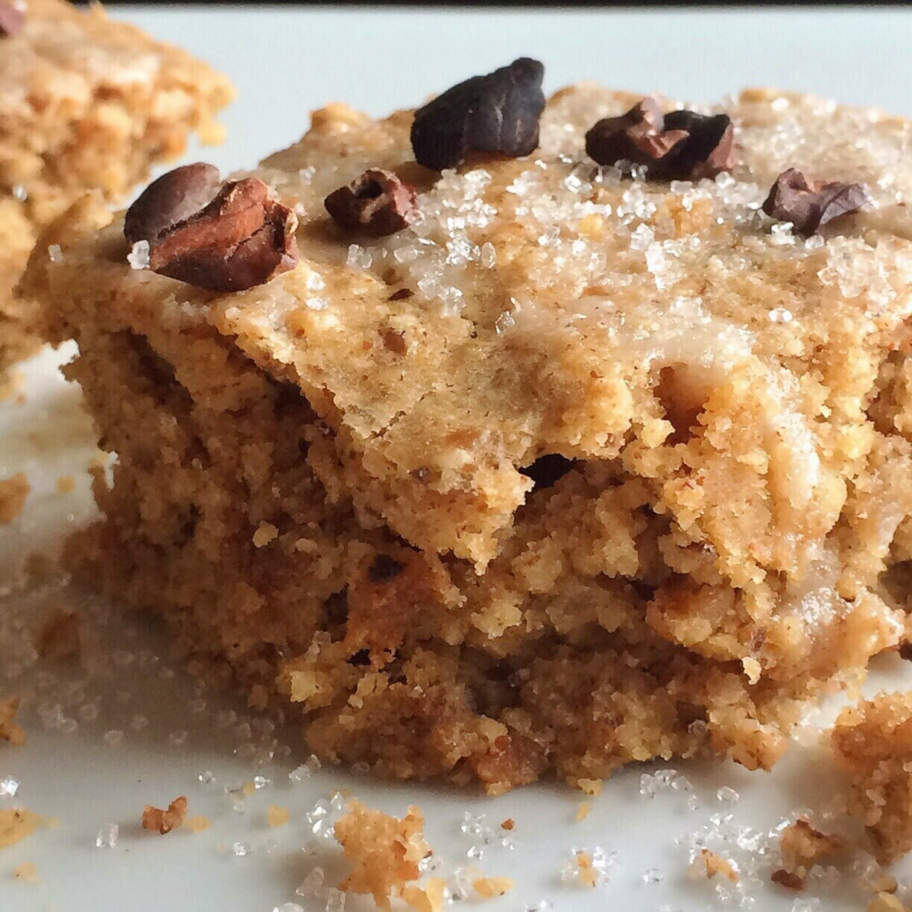
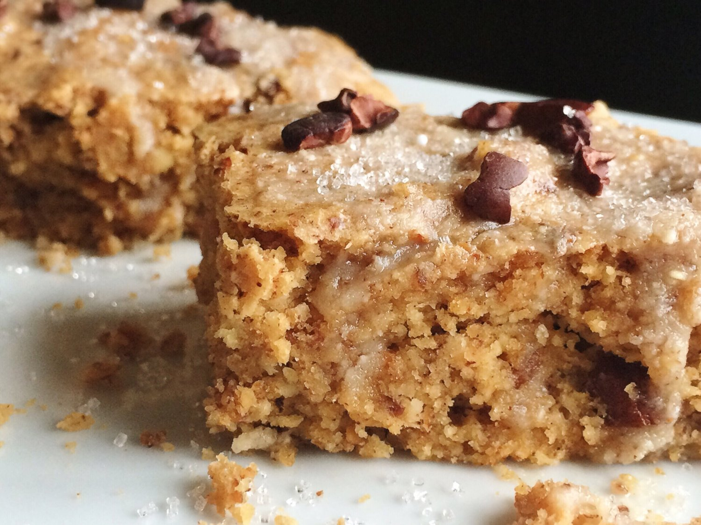

Peanut Butter Chocolate Chunk Blondies (vegan, gluten free)

Okay yep Square Bars are my favorite thing right now since they came out with a peanut butter flavor. I want to do soo much with them! I made these vegan & gluten free peanut butter chocolate chunk blondies, and something about the texture has me in heaven. I think I'm getting a hang of this whole vegan baking thing!
I could use some help in the savory department though ._. AND WAFFLES. Why are vegan waffles so hard?! Frustrating as heckkkk. But oh well.
Whether you're vegan or not, you'll LOVE these blondies!! I think that's what's awesome about vegan baking, is that you don't have to be vegan to taste that it's absolutely delicious. So really it's just a bonus perk :D These blondies are smooth, moist (I said it), and peanut butter-y. With random hints of chocolate woohoo. I REALLY like them when they've been refrigerated. Side note, I think I always spell refrigerate wrong. My bad. Anyways. Give these peanut butter chocolate chunk blondies a go and let me know what you think! I couldn't keep my hands off them and definitely didn't want to share.

Peanut Butter Chocolate Chunk Blondies (vegan, gluten free)
Makes: 12 blondies
-
1.5 cups rolled oats
-
1/4 cup almond meal/flour
-
1 TBSP ground flax
-
1/4 cup baking stevia
-
2 tsp baking powder
-
3/4 cup unsweetened almond milk
-
1/4 cup unsweetened applesauce
-
1/2 cup crunchy peanut butter (I use Crazy Richard's brand!)
-
1 chocolate peanut butter square bar
-
Grind the oats into a flour. Then in a medium bowl, mix the ground oats and the remaining ingredients (except for the square bar); mix very well until even.
-
Chop up the square bar into small pieces, and fold into the batter.
-
Spray a 9x9 baking dish with nonstick spray and pour your batter in. Bake at 350 F for 22-25 mins.
-
Let cool 10 minutes then cut into 12 pieces. Enjoy!